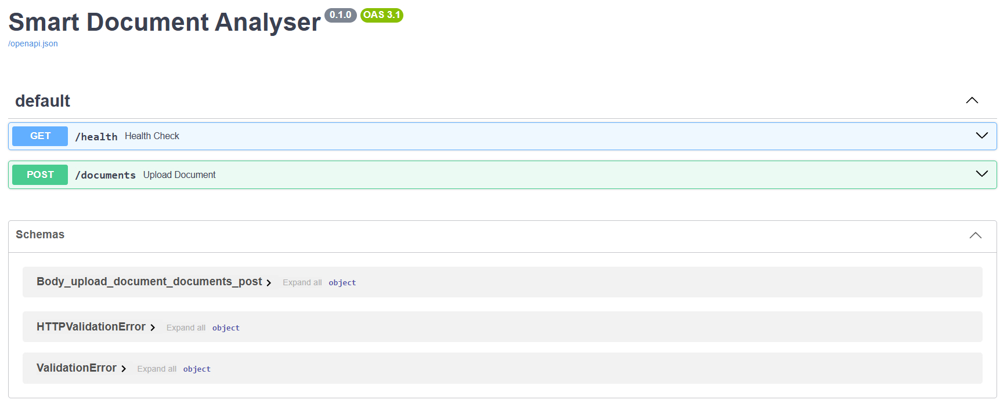
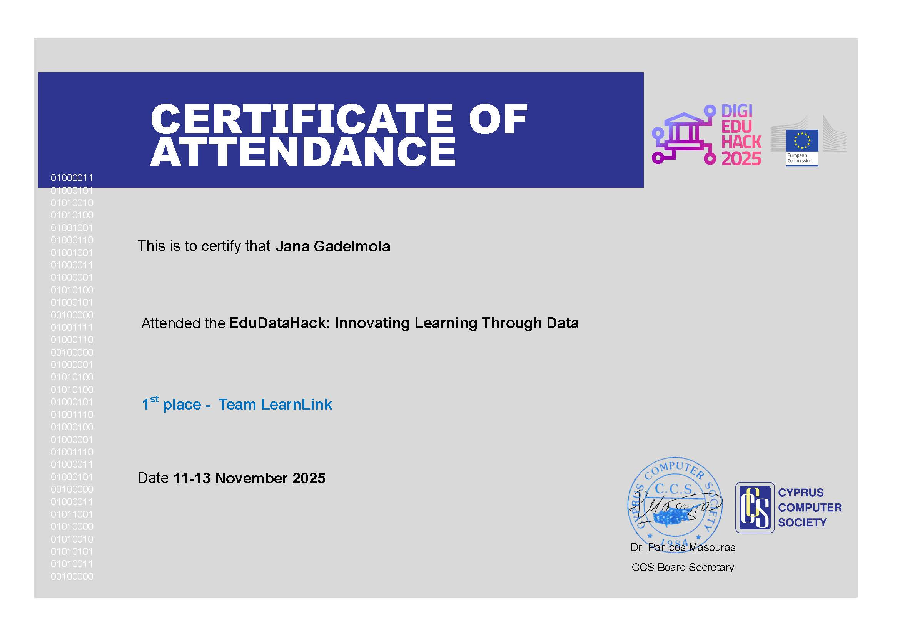
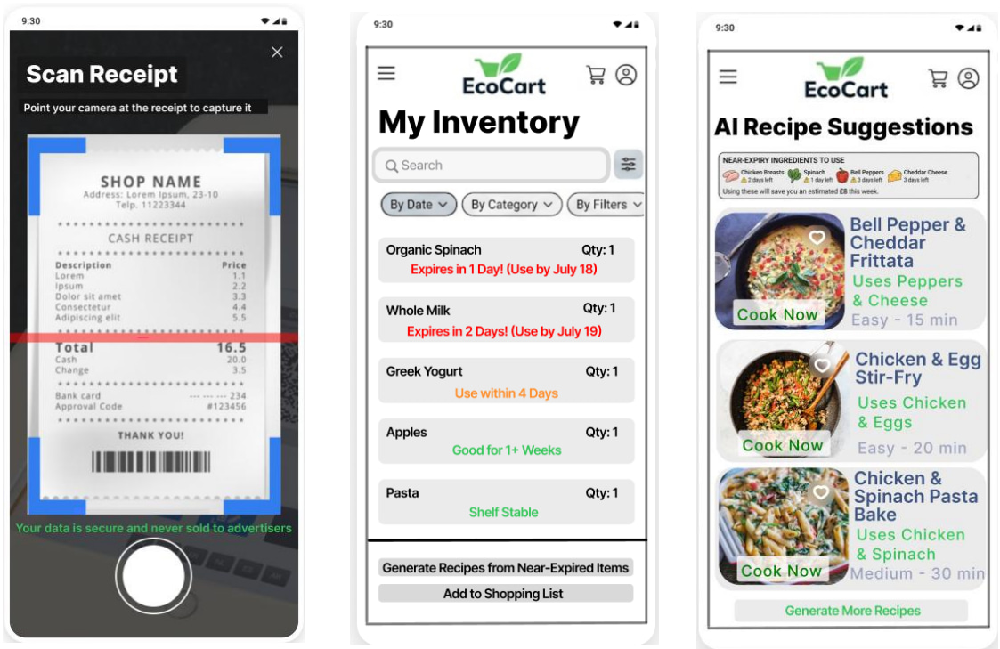
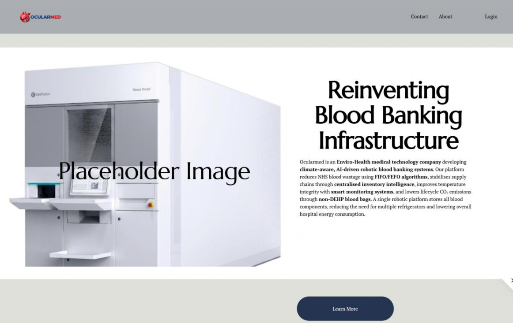

Jul 2026
Generative AI Summer Intern
Explored Generative AI concepts and industry applications, producing weekly reflections and scoring 97% on the final assessment.
Building ideas into useful technology. I’m a second-year Computer Science student interested in Generative AI, data, product development and solving real-world problems with technology.
More than a list of technologies, I care about understanding the problem first, then building something that actually helps.
I’m a Computer Science student at the University of Surrey, currently studying for a BSc with a year in industry. My experience so far spans Generative AI, product development, prompt engineering and technical projects.
I enjoy the part of technology where you have to think: breaking down a problem, understanding users, exploring different approaches and turning an idea into something concrete.
Alongside my studies, I’m Course Representative for Computer Science, Secretary of the Basketball Society and Webmaster of Surrey CompSoc, experiences that have strengthened my communication, organisation and teamwork.
Technical and product-focused experience across Generative AI, prompt engineering and technology-led product development.
Explored Generative AI concepts and industry applications, producing weekly reflections and scoring 97% on the final assessment.
Acted as Product Analyst for the EcoCart concept, creating UX wireframes, a product requirements document and investor pitch deck. Designed an AI recipe feature focused on reducing household food waste.
Translated robotic blood-banking technology into accessible messaging, co-produced an AI-generated explainer video and designed a website strategy and logo.
A mix of technical projects, product work and challenge-based builds. My GitHub has more of my work.

A Python/FastAPI document analysis backend that accepts .txt, .pdf and .docx files, extracts their contents and uses the Gemini API to classify documents and generate tailored outputs. The pipeline uses structured JSON schemas with separate classification and generation stages. A web frontend, database persistence and user accounts are planned as future stages.
View on GitHub ↗
A study-partner app concept designed to match students based on their subjects, timetables and learning styles. I focused on the product concept and design, helping shape the user experience and overall solution during the hackathon.

As Product Analyst, I developed the product requirements and UX concept for an AI-powered Smart Pantry designed to help users reduce food waste and save money. I created user personas, user stories and acceptance criteria, and designed UX wireframes for receipt scanning, inventory management and AI-powered recipe suggestions.
View Product Requirements ↗
As a Prompt Engineer, I helped translate Ocularmed's robotic blood-banking technology into clear, accessible messaging. I worked on prompt development for an AI-generated explainer video and contributed to the website concept and visual identity.
A Java application built around student, grade and tracking classes.
GitHub ↗ JAVAA Java project organised into a finance package for personal finance tracking.
GitHub ↗ JAVA · OOPA console app for creating and sorting tasks by priority and deadline, with input validation.
GitHub ↗ JAVA · OOPA console app with flashcards, shuffled quiz mode, answer tracking and scoring.
GitHub ↗ JAVA · AI LOGICA Java console game with difficulty levels, pattern-based AI, score tracking and statistics.
GitHub ↗A curated selection of the technical, analytical and professional skills I’ve developed through university, internships, projects and work experience.
Java · Python · SQL
Data Structures & Algorithms · Object-Oriented Programming · Databases · Operating Systems
Generative AI · Machine Learning · Data Science · Prompt Engineering · Analytical Skills
GitHub · DBeaver · Microsoft Office
Communication · Teamwork · Leadership · Public Speaking · Problem Solving
Time Management · Organisation · Multitasking · Adaptability · Customer Service
English (Fluent) · Arabic (Native) · French (Basic)
Selected courses and certifications that complement my Computer Science degree.
University roles where I use communication, organisation and technical skills to contribute to the Surrey student community.
Computer Science · University of Surrey · May 2026-Present
Surrey Basketball Society · May 2026-Present
Computer Science Society (CompSoc) · Sep 2025-Present
Supporting the society’s digital presence and web-related activity.
University of Surrey Women’s 1 Basketball Team · Sep 2025-Present
I’m currently looking for a year-in-industry placement where I can learn from experienced teams, contribute to meaningful work and keep developing as a Computer Science student.